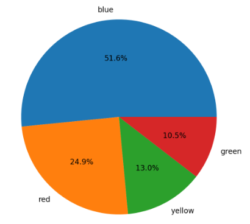
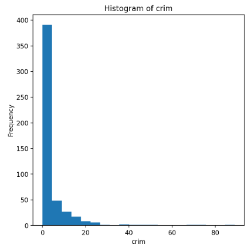
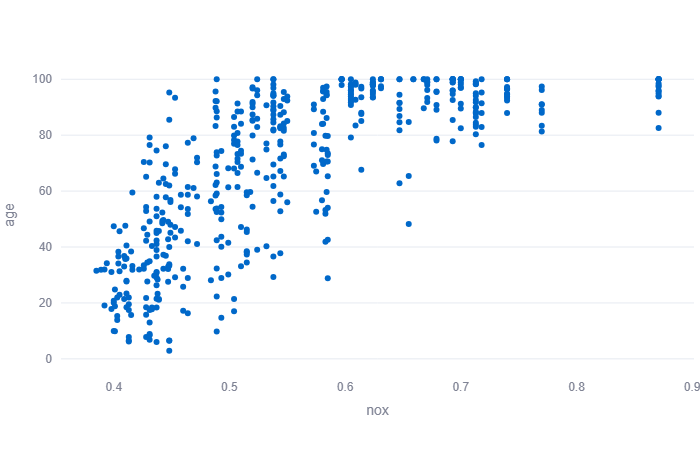
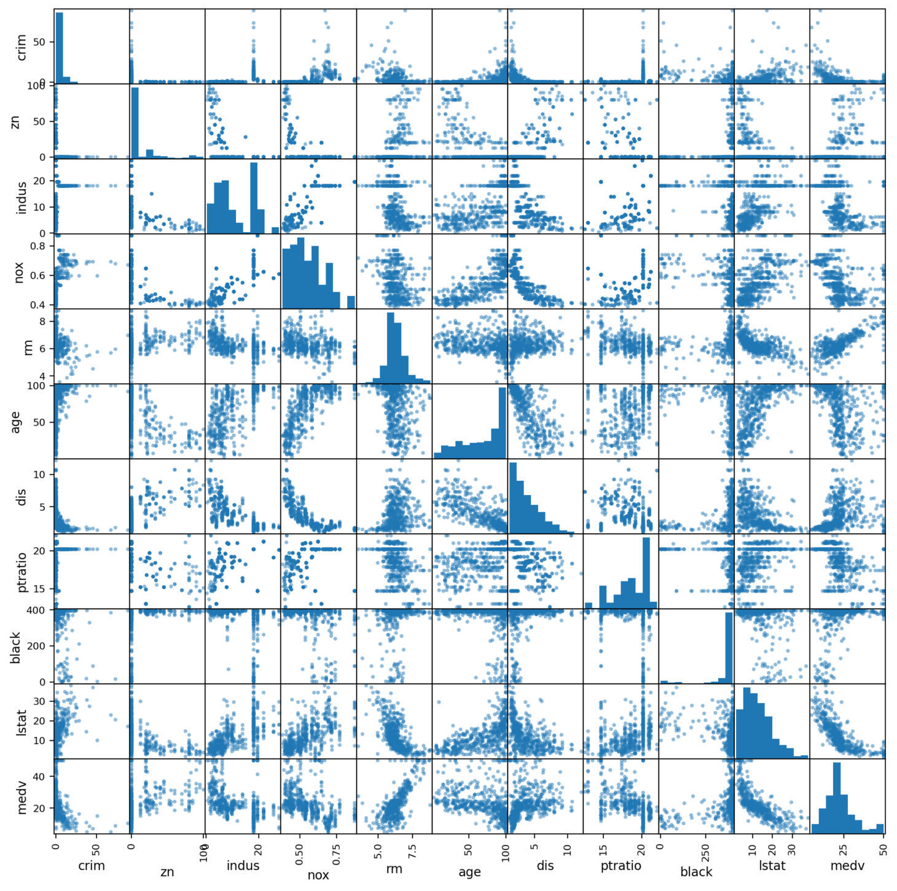
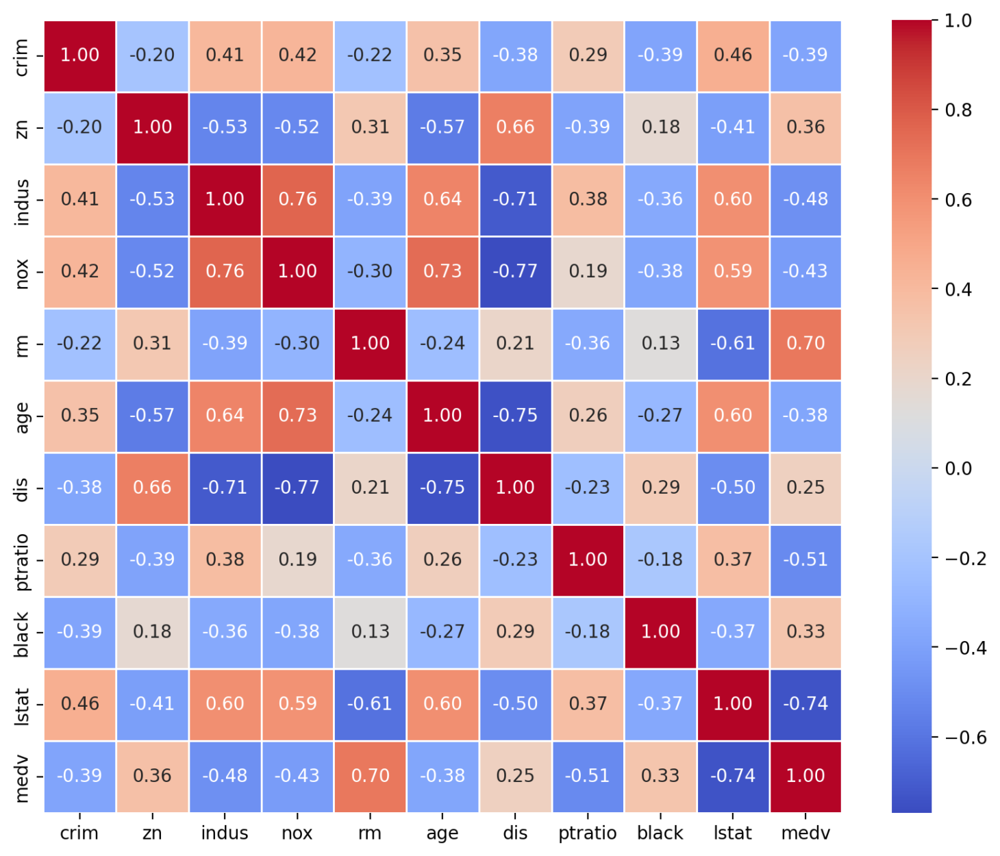
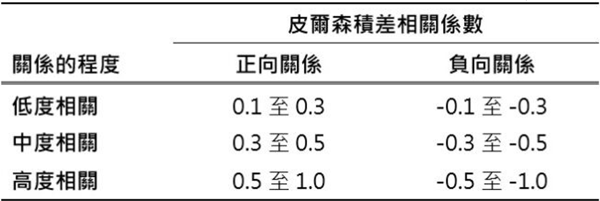

專有名詞解析——資料視覺化頁面
April 30, 2024
1、類別型變數 (categorical variables):
描述資料中類別或群組的變數，例如性別、教育程度等；常見對應數據類型有物件（Object）、字符串（String）（STR）等。
2、數值型變數 (numerical variable):
描述資料中數值的變數，例如年齡、收入等；常見對應數據類型有整數（Integer）（INT）、浮點數（Floating Point）（FLOAT）
［常見問題］為什麼要提供數值型轉為類別型變數的功能？
此功能提供於當問卷設定 1 - 5 為非常不滿意至非常滿意時，數字的意義應使用類別型變數表示較為洽當，因此使用者應自行判定資料是否需要進行此轉換。
3、圓餅圖:
用於視覺化類別型變數的分布情況。
4、直方圖:
用於視覺化數值型變數的分布情況。
5、散佈圖(scatter plot):
用於視覺化兩個變數之間相互關係。
6、散佈矩陣 (scatter matrix):
用於視覺化多個數值型變數之間相互關係的矩陣圖表。
7、相關矩陣 (correlation matrix):
顯示不同變數之間相關性的矩陣，通常是用相關係數表示。
8、皮爾森積差相關係數(Pearson product-moment correlation coefficient):
測量兩變項間關聯的方向和程度的一個量化數值，其值坐落於-1至1之間。
